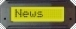

  <div id="navBar">
	  
    <P align="center">
    	<FONT size="-1">
        <br />
	<A href="index.htm#02-Jan-2005" ><B>02-Jan-2005</B><br />Beta 2 + menu plugin</A><br /><br />
	<A href="index.htm#29-12-2004" ><B>29-12-2004</B><br />Big Num plugin</A><br /><br />
	<A href="index.htm#22-12-2004" ><B>22-12-2004</B><br />Beta 1 + plugin</A><br /><br />
	<A href="index.htm#16-12-2004" ><B>16-12-2004</B><br />5.3 Alpha 7 Released</A><br /><br />
	<A href="index.htm#13-12-2004" ><B>13-12-2004</B><br />5.3 Alpha 6 Released</A><br /><br />
	<A href="index.htm#5-12-2004" ><B>5-12-2004</B><br />5.3 Alpha 5 Released</A><br /><br />
	<A href="index.htm#30-11-2004" ><B>30-11-2004</B><br />5.3 Alpha 4 Released</A><br /><br />
	<A href="index.htm#25-11-2004" ><B>25-11-2004</B><br />5.3 Alpha 3 Released</A><br /><br />
	<A href="index.htm#22-11-2004" ><B>22-11-2004</B><br />5.3 Alpha 2 Released</A><br /><br />
	<A href="index.htm#20-11-2004" ><B>20-11-2004</B><br />5.3 Alpha 1 Released</A><br /><br />
	<A href="index.htm#11-11-2004" ><B>11-11-2004</B><br />Testers Wanted.</A><br /><br />
	<A href="index.htm#29-10-2004" ><B>29-10-2004</B><br />Smartie IS open source!</A><br /><br />
        <A href="index.htm#28-10-2004" ><B>28-10-2004</B><br />Smartie going open source!</A><br /><br />
        <A href="index.htm#13-4-2003" ><B>13-4-2003</B><br />LCD SMartie 5.2 first release</A><br /><br />
        <A href="index.htm#27-1-2003" ><B>27-1-2003</B><br />Site move</A><br /><br />
        <A href="index.htm#25-11-2002" ><B>25-11-2002</B><br />new link and pic</A><br /><br />
        <A href="index.htm#24-8-2001" ><B>24-8-2001</B><br />Version 3.0 is out</A><br /><br /><br />
      </FONT>

  </div>
